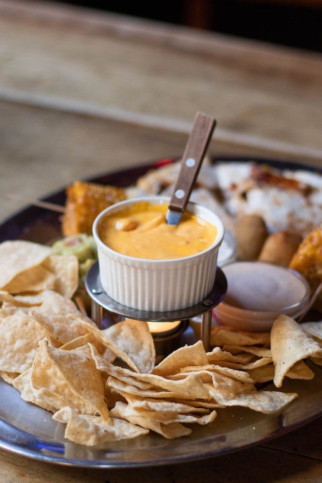

Odin Recipes
Return to Home
Buffalo Chicken Dip

Description
This recipe is bound to be a huge hit at your social event. The perfect blend of spicy, tangy, and creamy in one dish.
This dip pairs nicely with celery, tortilla chips, or club crackers. You will enjoy this simple, delicious appetizer!
Canned chicken keeps this recipe quick and easy. Shredded chicken breast is a great substitute.
Vinegar based hot sauce works perfectly by turning up the heat and soaking into the chicken for extra flavor.
Ranch dressing adds tang and creaminess, balancing bite from the hot sauce.
Cream cheese brings body and flavor to the dish, and essential component for overall texture.
Cheddar cheese is a perfect way to finish the dish adding a golden gooey element and topping.
Ingredients
Here is what you need for this tasty recipe:
- 2 - 10 ounce cans of chunk chicken, drained
- 3/4 cup - hot sauce, preferably Frank's Red Hot
- 2 - 8 ounce packages of light cream cheese, softened
- 1/2 cup - light ranch dressing
- 1 1/2 cup - reduced fat cheddar cheese
- 1 package - celery sticks, tortilla chips, or crackers
Steps
- Heat chicken and hot sauce in skillet over medium heat until simmering. Continue to simmer over medium-low heat.
- Add cream cheese and ranch dressing, continue to stir until well blended and remaining chunks are softened.
- Add half of cheddar cheese, stir until well blended, continue to cook for approximately 15 minutes.
- Transfer to serving dish and add remaining cheddar cheese to top, cover until well melted.
- Remove cover and serve with celery, tortilla chips, or crackers